200+
preset scenes and geometry objects
Geometry without friction
Math3D combines interactive surfaces, procedural solids, and topology tools with CGAL/VTK-backed workflows. Use it for teaching, prototyping, and research visuals.
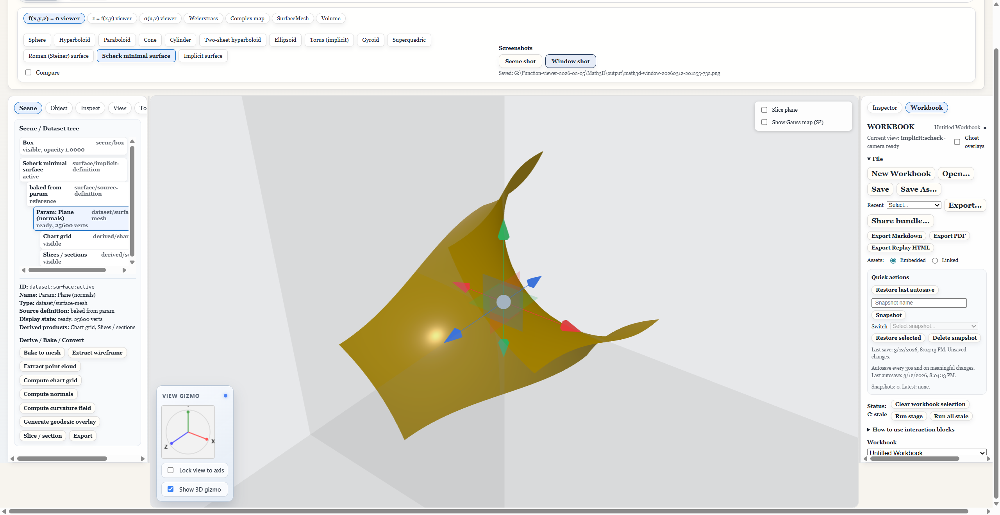
Implicit mode focuses on field-defined surfaces and mesh extraction for complex equation-driven geometry.
preset scenes and geometry objects
high-fidelity mesh and volume operations
tested workflows for release confidence
same core app in both runtime modes
Why Math3D
Explore implicit, explicit, and parametric surfaces with contouring, curvature tools, and diagnostics.
Create procedural solids and constructions, then inspect constraints and measurements in-context.
Construct polygon-word models and animate realizations for educational or exploratory topological studies.
Use Python worker integrations for heavier CGAL/VTK operations when precision and throughput matter.
Gallery / Showcase
The showcase is organized by working mode so visitors can quickly see where each feature lives in the product.
Explicit, parametric, Weierstrass, and implicit presets.
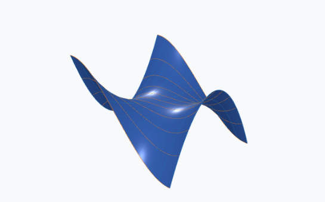
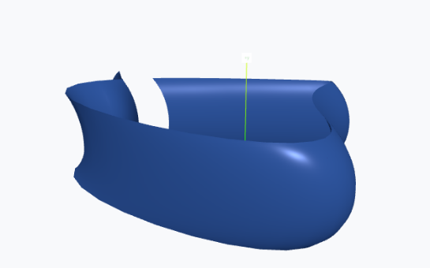
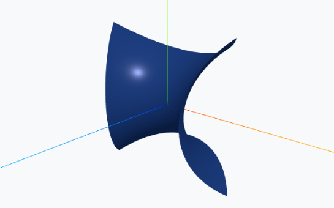
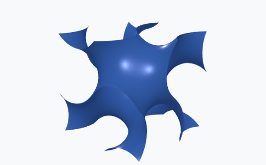
Grid views, domain/calculus panels, and analysis-ready layouts.
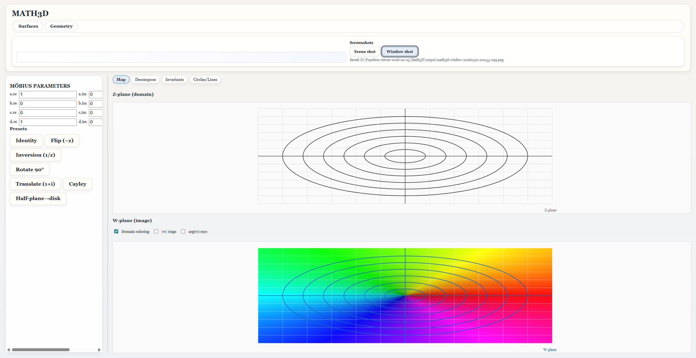
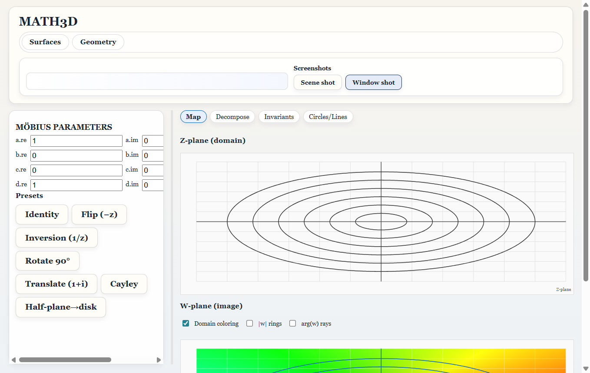
Object properties, mesh stats, derived products, and scene overlays.
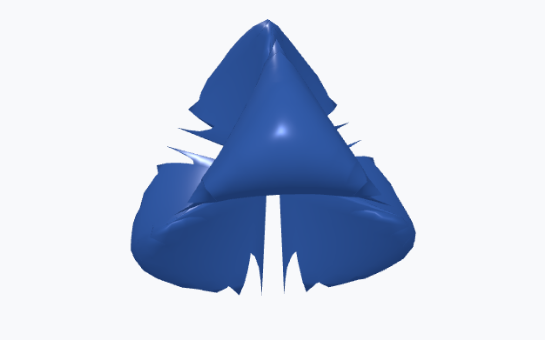
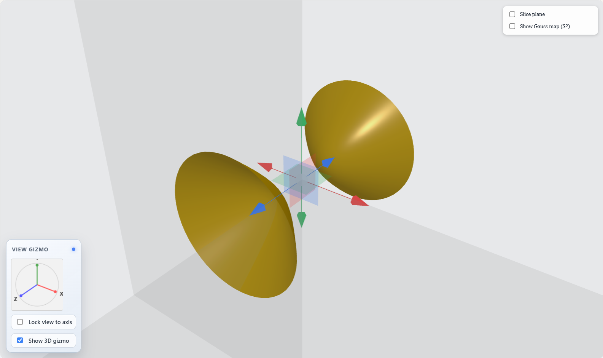
Torus, Klein bottle, Mobius strip, and stage-based topology studies.
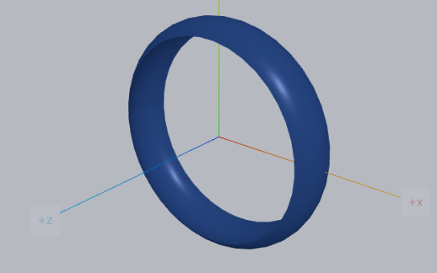
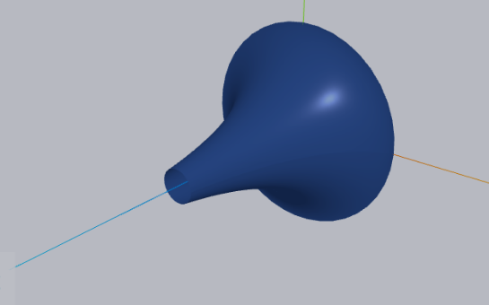
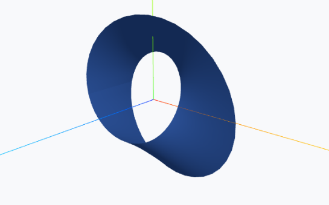
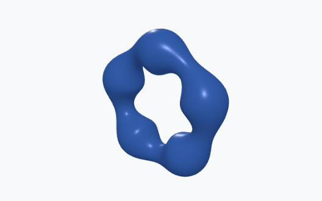
Task-style sessions with snapshot state, export actions, and replay workflow.
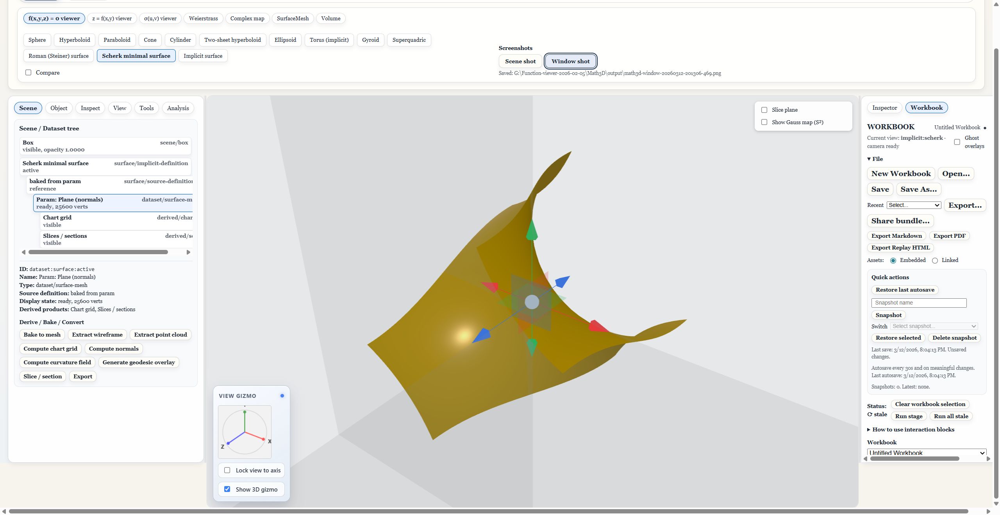
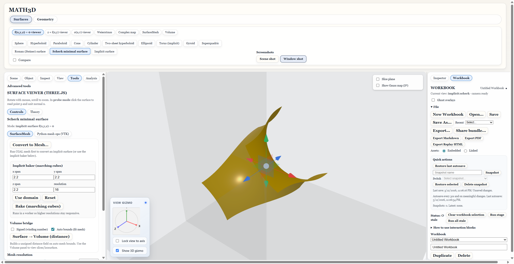
Narrow layout controls and touch-oriented inspector/view flow.
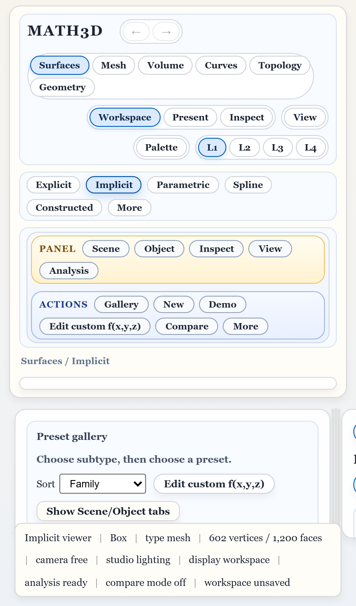
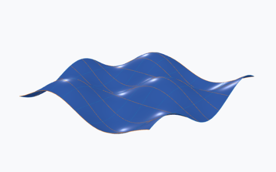
Equation → Mesh → Analysis → Scene, with worker-backed runtime links.
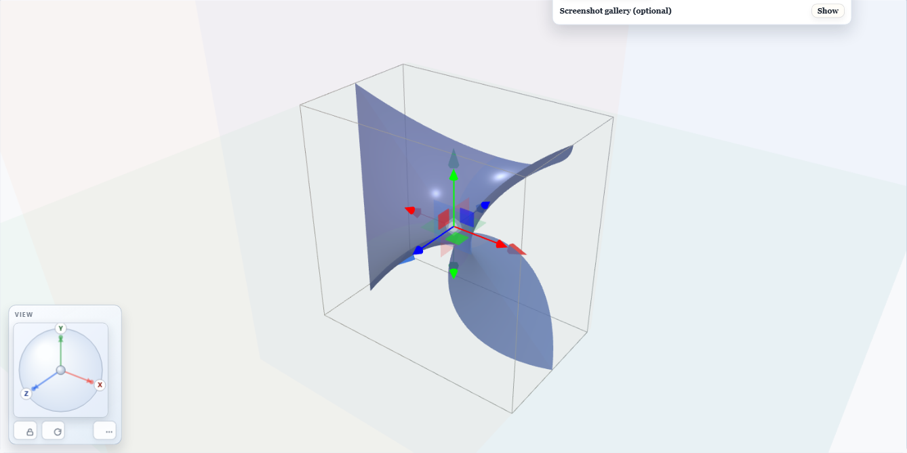
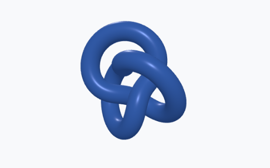
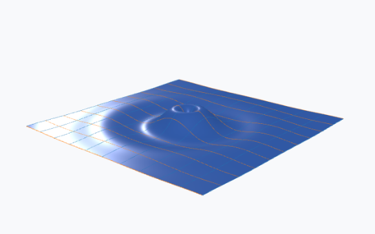
Typical Workflow
Start in the browser for quick access, or install the desktop release for local workflows with bundled worker tooling.